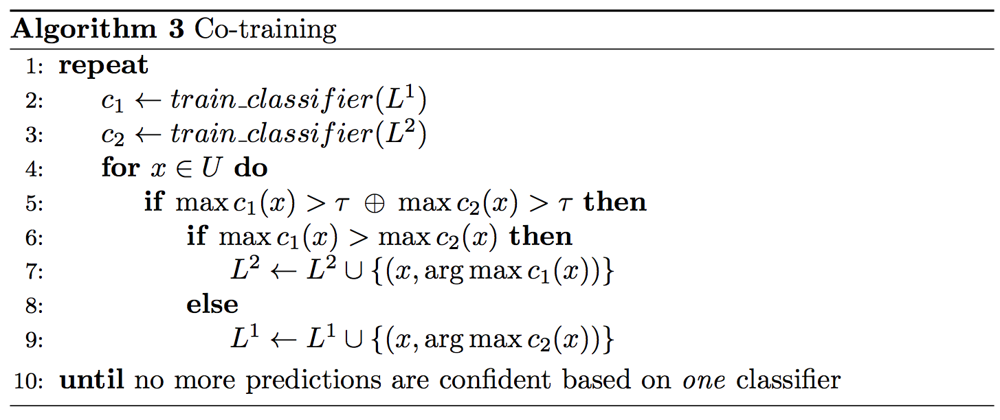
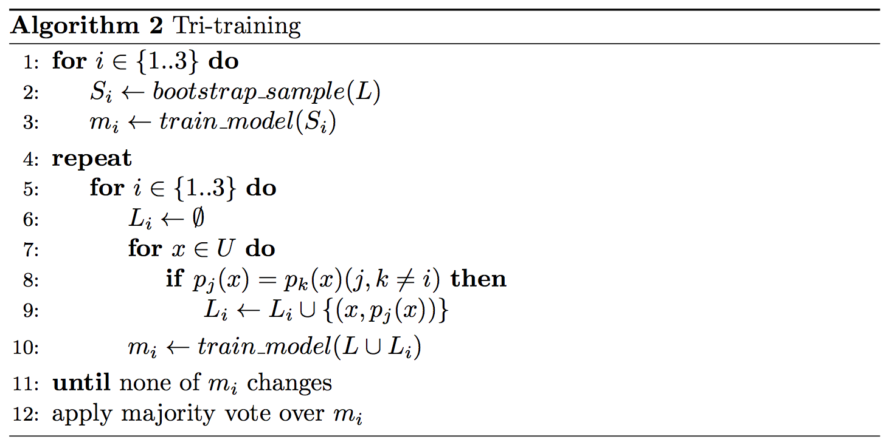

An overview of proxy-label approaches for semi-supervised learning
Table of contents:
Semi-supervised learning is a truly vast field. For a (slightly outdated) overview, refer to Zhu (2005) [1] and Chapelle et al. (2006) [2]. I will focus in this blog post on a particular class of semi-supervised learning algorithms that produce proxy labels on unlabelled data. This class of models is of particular interest in my opinion, as a) deep neural networks have been shown to be good at dealing with noisy labels and b) these models have achieved state-of-the-art in semi-supervised learning for computer vision. Some of the following approaches have been referred to as self-teaching or bootstrapping algorithms; I am not aware of a term that captures all of them, so I will simply refer to them as proxy-label methods.
I will divide these methods in three groups, which I will discuss in the following: 1) self-training, which uses a model's own predictions as proxy labels; 2) multi-view learning, which uses the predictions of models trained on different views of the data; and 3) self-ensembling, which ensembles variations of a model's own predictions.
There are many interesting and equally important directions for semi-supervised learning that I will not cover in this post, e.g. graph-convolutional neural networks [3]
Domain adaptation approaches that use unlabelled target domain data to bridge the domain gap.
Look at papers of Learning with Limited Data Workshop at NIPS 2017
Self-training
Self-training (Yarowsky, 1995; McClosky et al., 2006) [4, 5] is one of the earliest and simplest bootstrapping approaches. In essence, it leverages the model's own predictions on unlabeled data to obtain additional information that can be used during training. Typically the most confident predictions are taken at face value, as detailed next.
Self-training trains a model \(m\) on a labeled training set \(L\) and an unlabeled data set \(U\). At each iteration, the model provides predictions \(m(x)\) in the form of a probability distribution over classes for all unlabeled examples \(x\) in \(U\). If the probability assigned to the most likely class is higher than a predetermined threshold \(\tau\), \(x\) is added to the labeled examples with \(\DeclareMathOperator*{\argmax}{argmax} p(x) = \argmax m(x)\) as pseudo-label. This instantiation is the most widely used and shown in Algorithm 1.

Classic self-training has shown mixed success. In parsing it proved successful with small datasets (Reichart, and Rappoport, 2007; Huang and Harper, 2009) [6, 13] or when a generative component is used together with a reranker in high-data conditions (McClosky et al., 2006; Suzuki and Isozaki , 2008) [7]. Some success was achieved with careful task-specific data selection (Petrov and McDonald, 2012) [8], while others report limited success on a variety of NLP tasks (He and Zhou, 2011; Plank, 2011; Van Asch and Daelemans, 2016; van der Goot et al., 2017) [9, 10, 11, 12].
Its main downside is that the model is not able to correct its own mistakes and errors are amplified, an effect that is increased under domain shift.
Multi-view training
Co-training Co-training (Blum and Mitchell, 1998) [17] assumes the data \(L\) is presented in two separate views \(L^1\) and \(L^2\). Two classifiers are then trained, one on each view. At each iteration, only inputs that are confident according to exactly one of the two classifiers are moved to the training set. One classifier thus provides the labels to the inputs on which the other classifier is uncertain. Co-training can be seen in Algorithm 2.

Chen et al. (2011) [18] adapt Co-training to domain adaptation. They use pseudo-multiview regularization (Chen et al., 2011) [19] in order to split the features into two mutually exclusive views so that co-training is effective.
Tri-training Tri-training (Zhou and Li, 2005) [14] is a classic method that reduces the bias of predictions on unlabeled data by utilizing the agreement of three independently trained models. Tri-training as depicted in Algorithm 2 first trains three models \(m_1\), \(m_2\), and \(m_3\) on bootstrap samples of the labeled data \(L\). An unlabeled data point is added to the training set of a model \(m_i\) if the other two models \(m_j\) and \(m_k\) agree on its label. Training stops when the classifiers do not change anymore.

Tri-training with disagreement Tri-training with disagreement (Søgaard, 2010) [15] is based on the intuition that a model should only be strengthened in its weak points and that the labeled data should not be skewed by easy data points. In order to achieve this, it adds a simple modification to the original algorithm (altering line 8 in Algorithm 2), requiring that for an unlabeled data point on which \(m_j\) and \(m_k\) agree, the other model \(m_i\) disagrees on the prediction. Tri-training with disagreement is more data-efficient than tri-training and has achieved competitive results on part-of-speech tagging (Søgaard, 2010).
Asymmetric tri-training Asymmetic tri-training (Saito et al., 2017) [16] is a recently proposed extension of tri-training that achieved state-of-the-art results for unsupervised domain adaptation in computer vision. For unsupervised domain adaptation, the text data and unlabeled data are from a different domain than the labelled examples. To adapt tri-training to this shift, Saito et al. train one of the models only on proxy labels on which the other two models agree (a change to line 10 in Algorithm 2) and use only this model to classify target domain examples at test time. In addition, all three models share the feature extractor.
Self-ensembling
https://thecuriousaicompany.com/mean-teacher/
Ladder networks
Semi-supervised learning with ladder networks blog post
http://rinuboney.github.io/2016/01/19/ladder-network.html
Temporal Ensembling
Mean Teacher
Related methods and areas
Distillation
Learning from weak supervision
Data augmentation
Conclusion
Many of the presented semi-supervised are quite old. I'm happy to correct any mistake I made.
References
Zhu, X. (2005). Semi-Supervised Learning Literature Survey. ↩
Chapelle, O., Schölkopf, B., & Zien, A. (2006). Semi-Supervised Learning. Interdisciplinary sciences computational life sciences (Vol. 1). http://doi.org/10.1007/s12539-009-0016-2 ↩
Kipf, T. N., & Welling, M. (2017). Semi-Supervised Classification with Graph Convolutional Networks. Proceedings of ICLR 2017. ↩
Yarowsky, D. (1995). Unsupervised word sense disambiguation rivaling supervised methods. In Proceedings of the 33rd annual meeting on Association for Computational Linguistics (pp. 189-196). Association for Computational Linguistics. ↩
McClosky, D., Charniak, E., & Johnson, M. (2006). Effective self-training for parsing. Proceedings of the Main Conference on Human Language Technology Conference of the North American Chapter of the Association of Computational Linguistics, 152–159. ↩
Reichart, R., & Rappoport, A. (2007). Self-training for enhancement and domain adaptation of statistical parsers trained on small datasets. In Proceedings of the 45th Annual Meeting of the Association of Computational Linguistics (pp. 616-623) ↩
Suzuki, J., & Isozaki, H. (2008). Semi-supervised sequential labeling and segmentation using giga-word scale unlabeled data. Proceedings of ACL-08: HLT, 665-673. ↩
Petrov, S., & McDonald, R. (2012). Overview of the 2012 shared task on parsing the web. In Notes of the first workshop on syntactic analysis of non-canonical language (sancl) (Vol. 59). ↩
He, Y., & Zhou, D. (2011). Self-training from labeled features for sentiment analysis. Information Processing & Management, 47(4), 606-616. ↩
Plank, B. (2011). Domain adaptation for parsing. University Library Groniongen][Host]. ↩
Van Asch, V., & Daelemans, W. (2016). Predicting the Effectiveness of Self-Training: Application to Sentiment Classification. arXiv preprint arXiv:1601.03288. ↩
van der Goot, R., Plank, B., & Nissim, M. (2017). To normalize, or not to normalize: The impact of normalization on part-of-speech tagging. arXiv preprint arXiv:1707.05116. ↩
Huang, Z., & Harper, M. (2009). Self-training PCFG grammars with latent annotations across languages. In Proceedings of the 2009 Conference on Empirical Methods in Natural Language Processing: Volume 2-Volume 2 (pp. 832-841). Association for Computational Linguistics. ↩
Zhou, Z.-H., & Li, M. (2005). Tri-Training: Exploiting Unlabled Data Using Three Classifiers. IEEE Trans.Data Eng., 17(11), 1529–1541. http://doi.org/10.1109/TKDE.2005.186 ↩
Søgaard, A. (2010). Simple semi-supervised training of part-of-speech taggers. Proceedings of the ACL 2010 Conference Short Papers. ↩
Saito, K., Ushiku, Y., & Harada, T. (2017). Asymmetric Tri-training for Unsupervised Domain Adaptation. In ICML 2017. Retrieved from http://arxiv.org/abs/1702.08400 ↩
Blum, A., & Mitchell, T. (1998). Combining labeled and unlabeled data with co-training. In Proceedings of the eleventh annual conference on Computational learning theory (pp. 92-100). ACM. ↩
Chen, M., Weinberger, K. Q., & Blitzer, J. C. (2011). Co-Training for Domain Adaptation. In Advances in Neural Information Processing Systems. ↩
Chen, M., Weinberger, K. Q., & Chen, Y. (2011). Automatic Feature Decomposition for Single View Co-training. Proceedings of the 28th International Conference on Machine Learning (ICML-11), 953–960. ↩